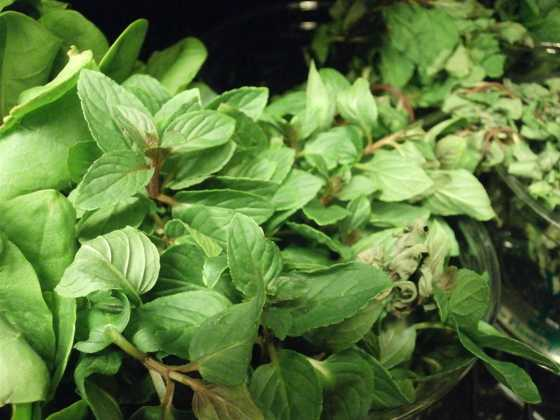
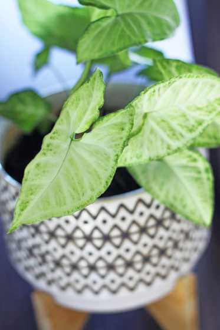

カフェ / 北海道千歳市みどり台北
ゆるべじかふぇ coco△l ＋ココアル
野菜のやさしさと花の香りに、ゆるやかにととのう木の家のカフェ。
お店の詳細は準備中の項目が多い見本ページです。電話:準備中

お店について
千歳市みどり台北の住宅街にある、木のぬくもりを感じる一軒家のカフェです。農家直送の有機野菜や無添加の調味料など、できるだけ体にやさしい素材で作る「ゆるべじごはん」が紹介されています(出典:poroco)。
扉を開けてすぐの場所には、生花やドライフラワー、キャンドルを扱う「nest FLOWER +」があるとされ、お隣にはソフトクリームのお店「ぴ～ちゃん」があります。
店名の意味や、オーナーさんの想いは確認できていません。このページのコンセプトは制作側のイメージです。

メニュー
紹介されている内容の例です。料金・提供日・詳細は準備中です。メニューは変わることがあります。


季節と植物のイメージ
店内にあるとされる生花やドライフラワーの雰囲気を、植物の写真で表したイメージです。
口コミ(イメージ例)
以下は見本として制作側が作成したイメージ例です。実際のお客様の声ではありません。
イメージ例
野菜のおかずがいくつも並んで、食べたあとも体が軽く感じました。ゆっくり過ごせます。
イメージ例
木の家の雰囲気が落ち着きます。甘さがやさしいデザートで、ほっとひと息つけました。
イメージ例
小さなお子さん連れでも気兼ねなく入れそうな空気で、また寄りたいと思いました。
掲載写真はフリー素材のイメージです。実際の店舗の様子ではなく、他の地域で撮影されたものや撮影地が不明なものを含みます。